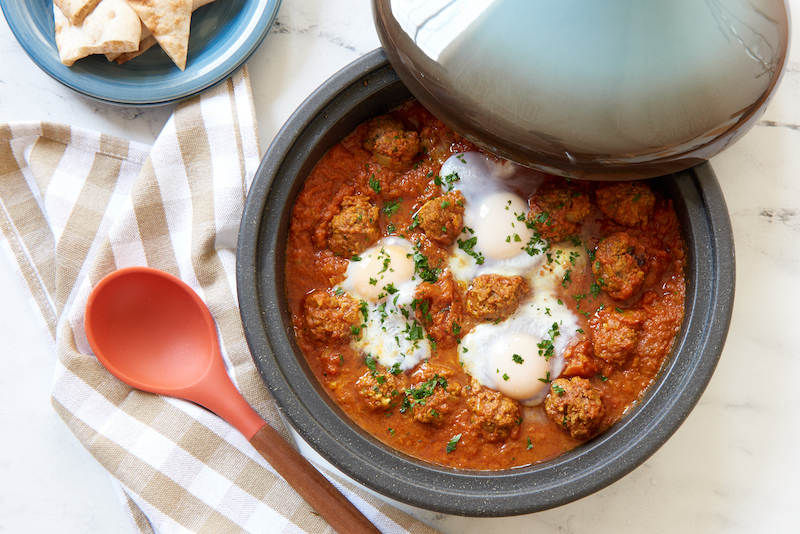

Home
Kefta and egg tagine

Description
Kefta and egg tagine is a traditional Moroccan and North African dish featuring seasoned ground meat simmered in a rich tomato sauce and topped with perfectly cooked eggs. It is flavorful, comforting, and commonly enjoyed with fresh bread for dipping into the savory sauce.
Ingredients:
Meatball Ingredients:
-
1 lb ground lamb or beef
- 1 tablespoon garlic, minced
- 1/2 onion finely diced
- 1/2 teaspoon salt
- 1/2 teaspoon paprika
- Small handful chopped Italian parsley
Tomato Sauce Ingredients:
- 2-3 Tablespoons olive oil
- 1/2 onion finely diced
- 3 large tomatoes
- 1 teaspoon turmeric
- 2 teaspoons spicy paprika (sudaniya in Morocco)
- 1/2 teaspoon salt
- 1 1/2 tsp cumin
- 1 teaspoon chopped Italian parsley
- 1 teaspoon garlic crushed
- 3 eggs
Steps:
-
Using 1 pound of ground meat mix in 1 tbsp crushed garlic,
1/2 onion diced finely, 1/2 tsp salt, and 1/2 tsp paprika,
and a small handful of chopped Italian parsley.
Mix well with your hand to combine all of the ingredients.
-
Roll into small balls slightly larger than a grape.
You can really make these any size you would like,
we just prefer them smaller - they also cook faster when they're smaller.
- In your tajine add 2-3 tbsp olive oil and 1/2 onion minced finely.
-
Place the tajine on the stovetop on medium heat,
using a diffuser if you have an electric range.
-
While this is heating up grate the insides of 3 large hothouse
tomatoes (or a similar variety) into a bowl and discarding the skins.
-
Mix into this 1 tsp turmeric, 2 tsp spicy paprika (sudaniya in Morocco),
1/2 tsp salt, 1 1/2 tsp cumin, 1 tsp chopped Italian parsley,
and 1 tsp garlic crushed. Pour this into the pre-heated tajine.
-
Arrange the meatballs in the tajine so that they each have a little space to soak up the sauce.
If you have more meatballs than space in the tajine reserve them for another dish.
You do want to make sure there is enough room for some sauce to remain.
- Cover the tajine and continue to cook on low to medium heat. Check after 30 minutes.
-
Once the meatballs are cooked through,
crack 3 eggs and place them on top of the meatballs and sauce.
Cover the tajine again so that the eggs can cook through.